One horizon, one building, one day
Pavilion Light is a symmetrical miniature: a cream Streamline deco pavilion with a stepped tower and a brass finial. It stands on a golden California bluff above a pastel Miami sea. Everything is built in three.js from primitives, so the scene is both a set of renders and a live page. Scrolling moves the sun from first light to sunset. At noon the sun crowns the finial, which is the brand mark come true. The palette is Parisian (zinc, cream, café red, brass) and the light is Miami morning. The tone is Nordic understatement: one idea per screen and a lot of air.
Stills, baked from the live scene
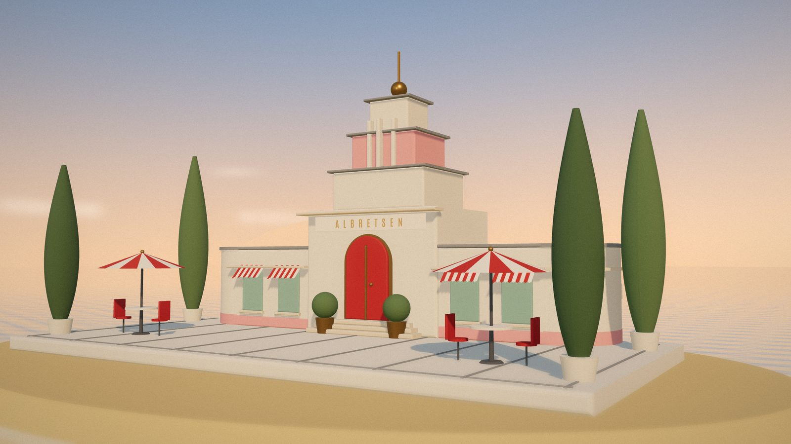
hero/hero-terrace-{960,1600,2400}.{avif,webp,jpg}: the second hero, a three-quarter view at golden hour. Use it for the about section or the OG image.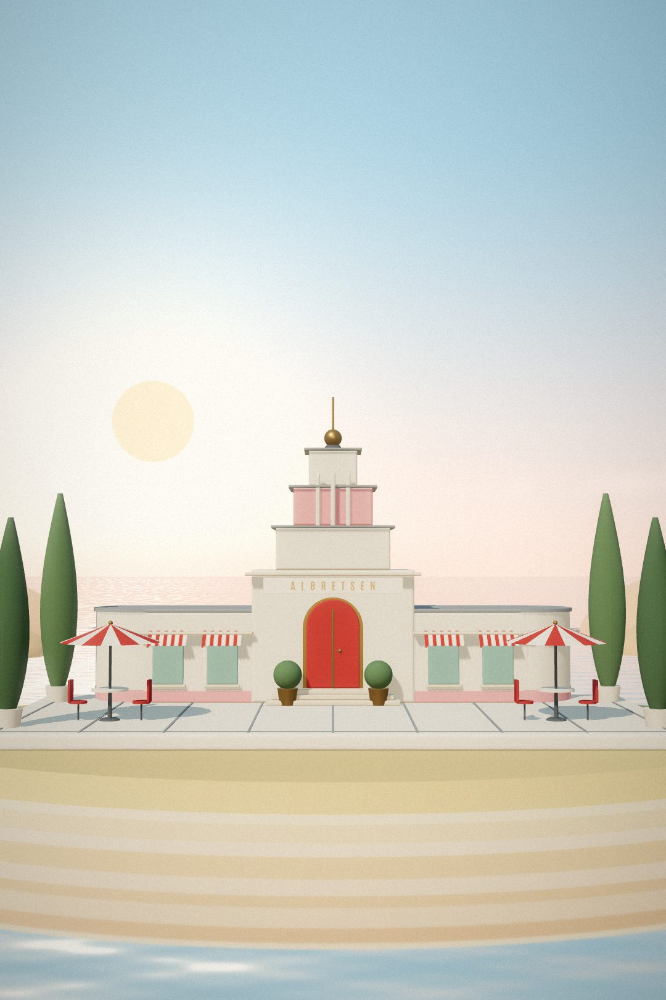
hero/hero-portrait-{720,1080}: the mobile hero, with lots of sky for the headline. hero-portrait-sunset-1080 is the same framing at sunset.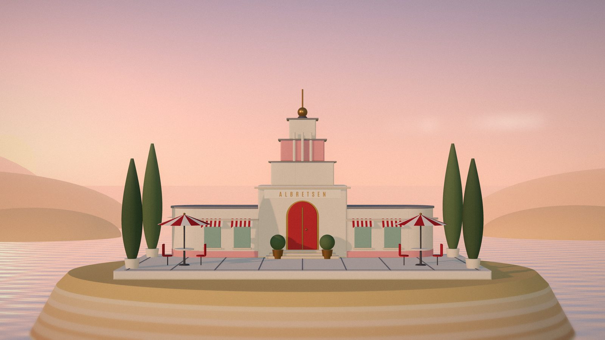
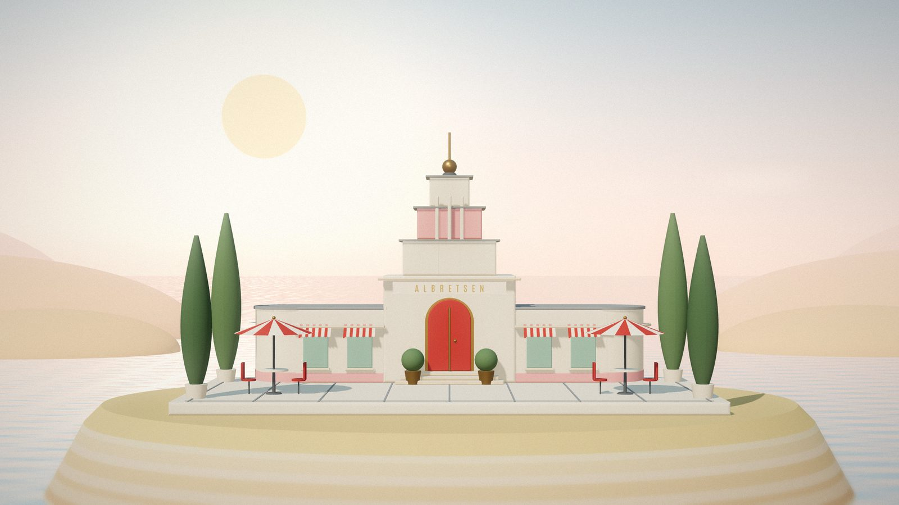
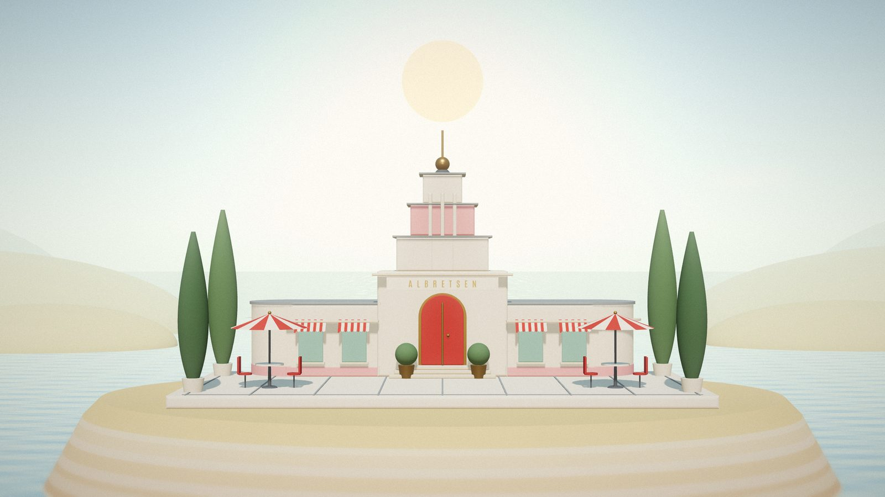
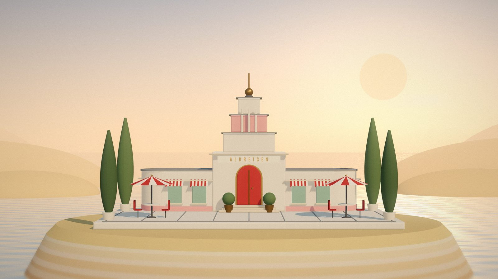
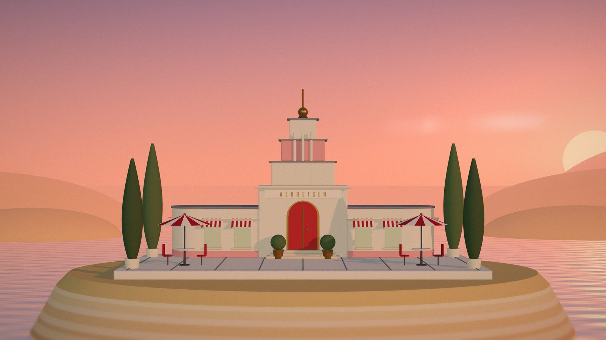
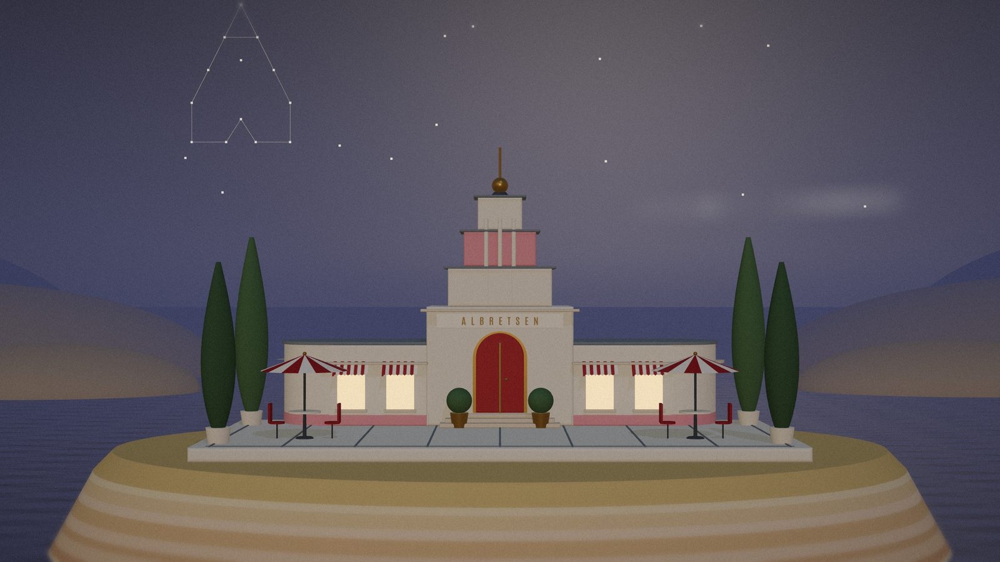
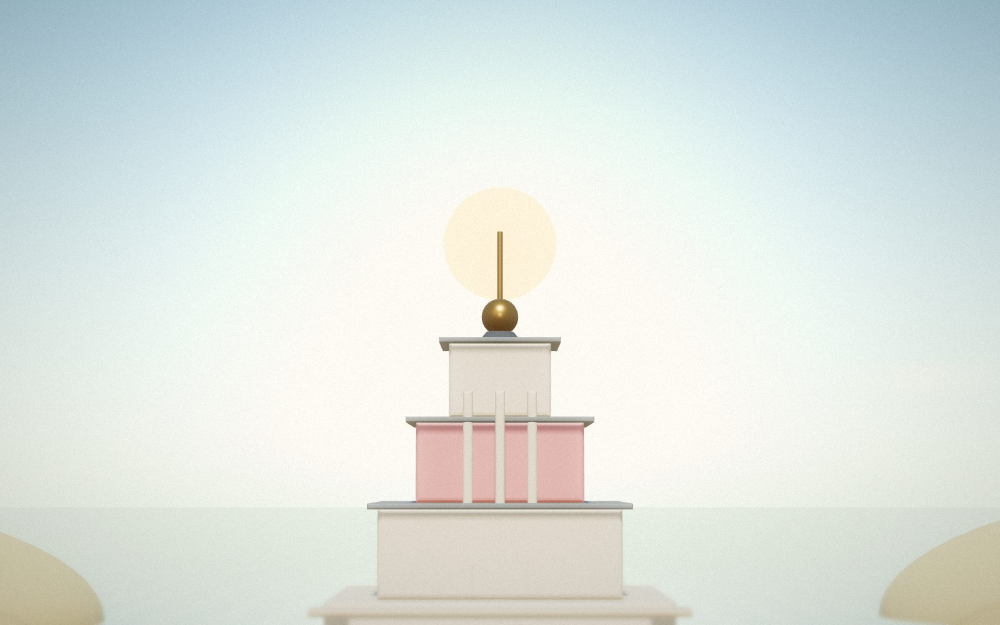
hero/noon-crown-1600: the mark, photographed. Use it for a 404 page or a blog header.The live pavilion
This is 3d/pavilion.js, an ES module built on vendored three.js r170. Drag the slider or pick a time. Hidden: click the sun three times, or press N. Night falls, the windows light up and the stars gather into the Albretsen mark. The iframe only loads when it scrolls into view.
A kiosk for each product
Each product gets its own small deco kiosk, with the real logo on the sign and the real name under it. Each one stands at a different hour. Harbor is paused, so its shutter is down. Hover a card to see the awning unroll (motion 3).


Retired: house-number tiles products/retired/*.svg
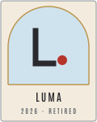


The sun over the pavilion
The mark is a café-red sun with the stepped tower cut out of it. Its arched door forms the counter of an A, and three sea lines run under the horizon. All lettering is outlined from Antonio 560, so the SVGs need no font.

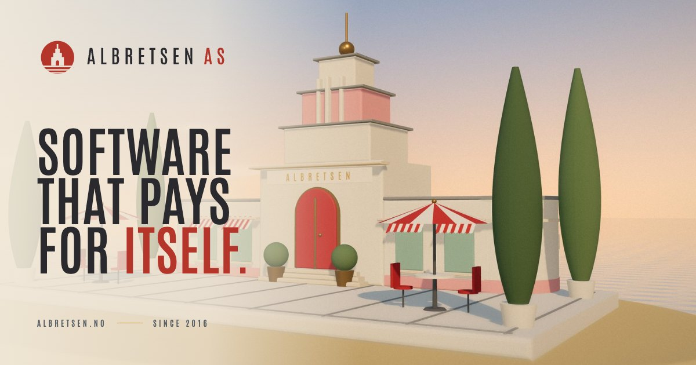
identity/og-image-1200x630.jpg (source: og-source.html)

Plaster, zinc and brass in pastel light
Antonio + Source Sans 3
Albretsen
Software that pays for itself
Source Sans 3 is a humanist sans with open apertures and calm rhythm, which makes it the quiet voice next to the condensed poster caps. Æ Ø Å æ ø å. 113,000+ installs. 17 tools. $782 MRR.
Antonio 200Antonio 400Antonio 600700
Labels: Antonio 600, caps, .28em tracking / Body: Source Sans 3 400, 17px, 1.6
Set pieces and ephemera
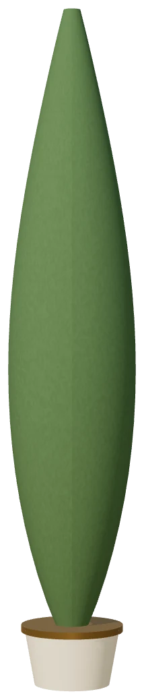
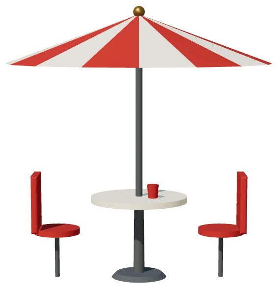
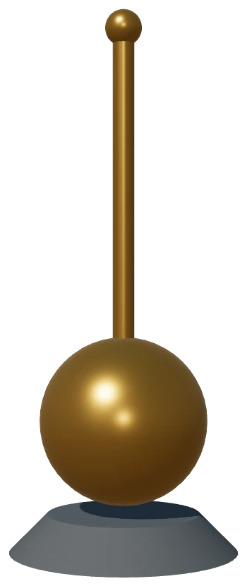
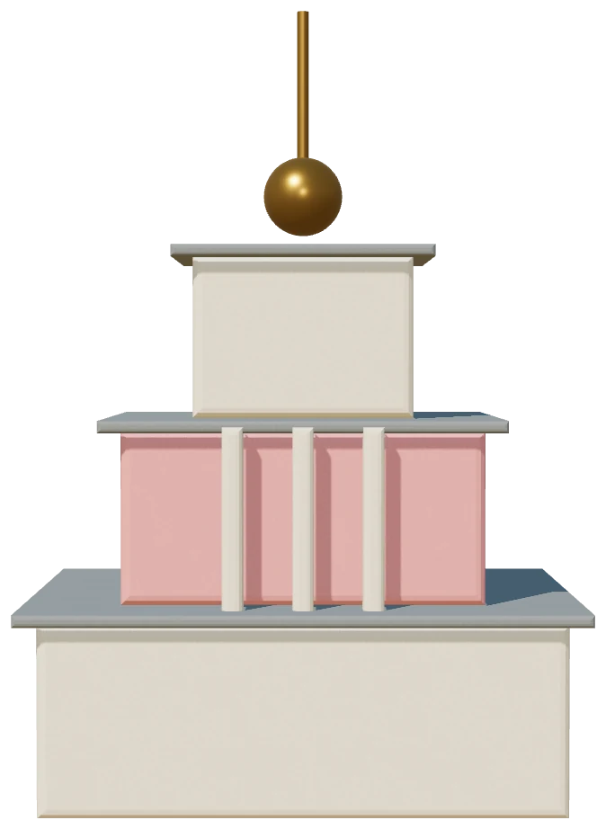
extras/cutouts/*.webp: transparent renders from createProp(). These use Sea Breeze (motion 1).
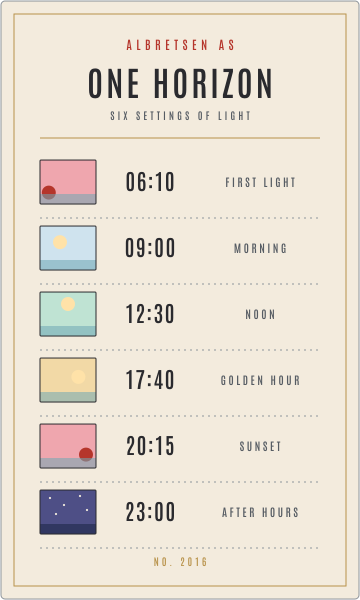
ephemera-day-card.svg: a time card for the six settings of light. It doubles as a menu for scrubbing the hero.pattern-sunburst.svg: a tileable deco fandivider-awning.svg: a scalloped valance divider
divider-horizon.svg: a horizon rule with a setting suntexture-plaster-512.webp: seamless plaster grain (this page uses it)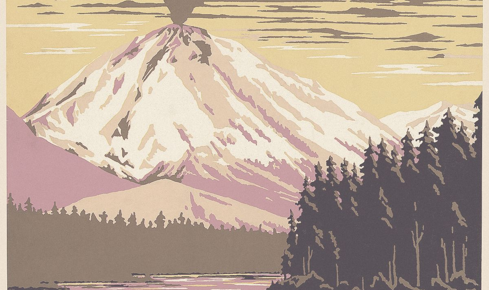
posters/study-lassen-1938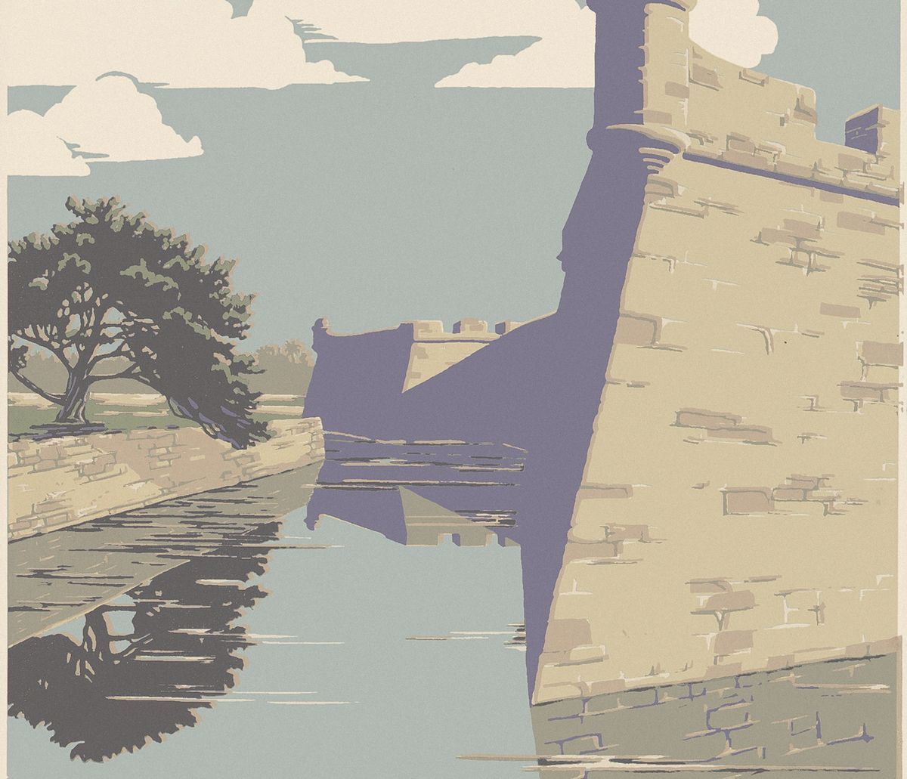
posters/study-fort-marion-1938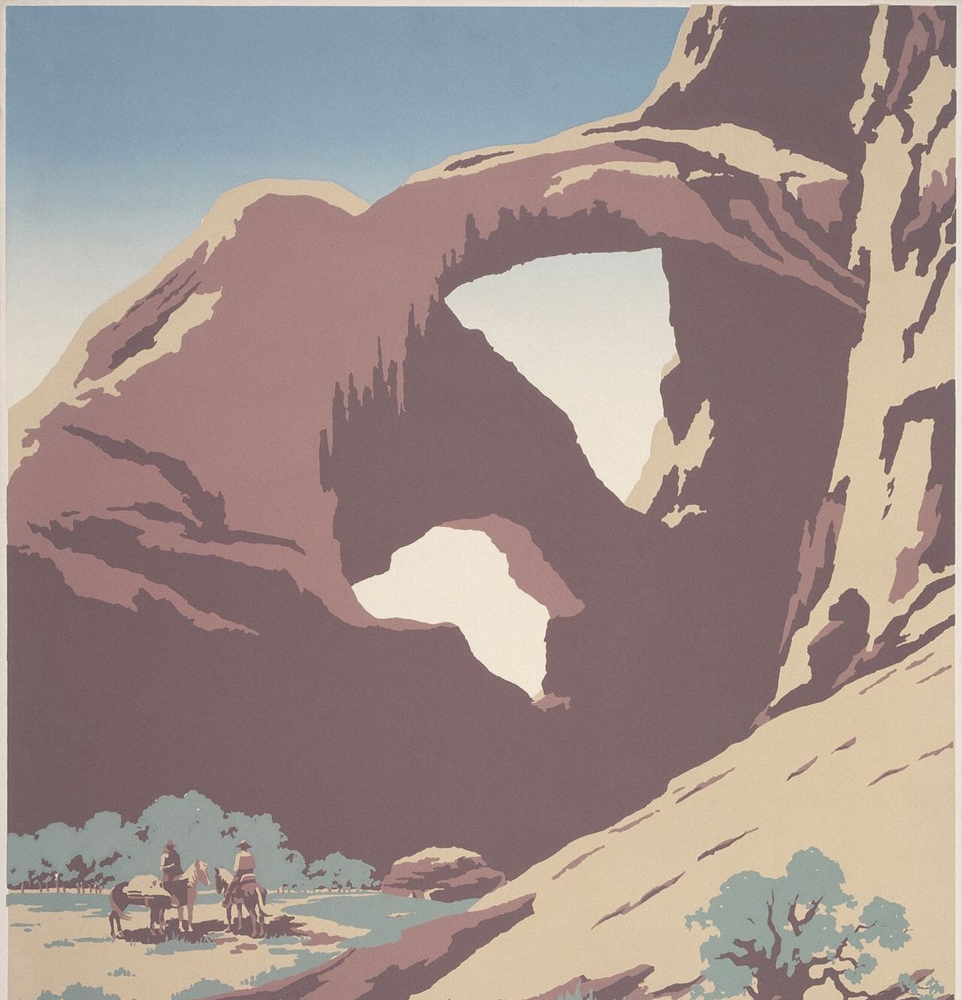
posters/study-see-america-1938: public-domain WPA silkscreens with the lettering cropped out, regraded to the palette. Use them as blog covers or framed pictures, never as hero images.Drift, never bounce
1 Sea Breeze .breeze .sway
Two periods that never line up (11 s and 7.3 s), moving about 6 px. Adapted from the slow product loops on Jacquemus and from real heat shimmer.
2 Horizon Rise .rise
Effective.Reasonable.
A brass hairline draws first, then the words rise from behind it. Adapted from the start-frame/end-frame reveals on Apple product pages.
3 Awning Unroll .awning-card
The valance drops and the card settles 2 px. Adapted from the card lifts on Stripe Sessions.
4 Heat Haze heatHaze(el)
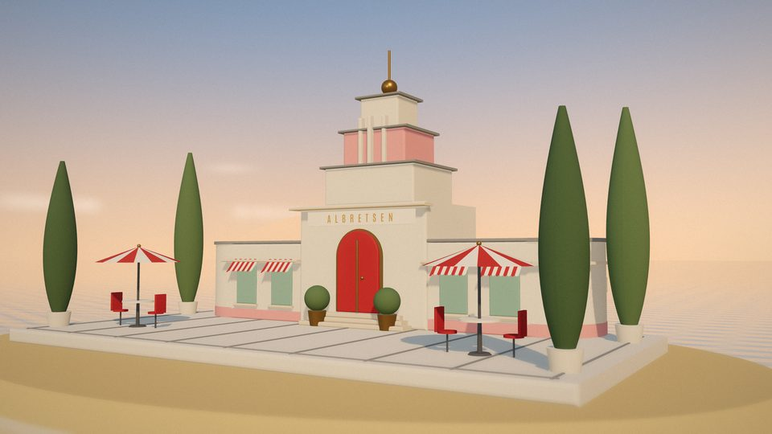
feTurbulence plus feDisplacementMap, limited to a thin band above the horizon. It runs at about 24 fps and pauses off-screen (technique from Codrops and Framer). It is also running on the hero at the top of this page.